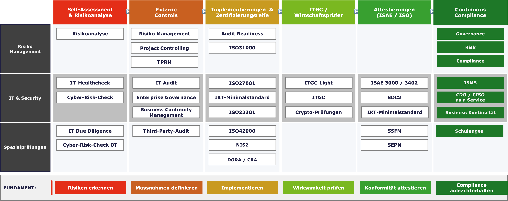

Von der initialen Risikoanalyse bis zur Attestierung — alles aus einer Hand.

Wir unterstützen Sie bei der systematischen Identifikation, Bewertung und Steuerung von IT-Risiken. Von der initialen Standortbestimmung über die Definition geeigneter Massnahmen bis zum laufenden Risikomanagement nach ISO 31000 — wir schaffen Transparenz über Ihre Risikolandschaft und befähigen Ihre Organisation, fundierte Entscheidungen zu treffen. Unsere Pakete:
Effektive Governance beginnt mit klaren Strukturen und definierten Verantwortlichkeiten. Wir unterstützen Sie beim Aufbau und der Optimierung Ihrer Governance-Frameworks, beim Project Controlling und bei der Einhaltung regulatorischer Anforderungen. Ob Third-Party Risk Management oder Enterprise Governance — unsere Lösungen sind massgeschneidert auf Ihre Organisation. Unsere Pakete:
Unsere IT-Audit-Leistungen decken das gesamte Spektrum der IT-Prüfung ab — von schlanken ITGC-Light-Assessments für KMU über vollständige ITGC-Prüfungen bis hin zu umfassenden IT-Audits nach anerkannten Standards. Der IT-Healthcheck liefert Ihnen eine schnelle Standortbestimmung Ihrer IT-Landschaft. Unsere Pakete:
Ihre IT-Infrastruktur ist das Rückgrat Ihres Unternehmens — und verdient eine gründliche Prüfung. Wir bieten umfassende Sicherheitsbewertungen und -implementierungen: vom IT-Healthcheck als Standortbestimmung über den Aufbau eines Informationssicherheits-Managementsystems (ISMS) nach ISO 27001 bis hin zu spezialisierten Cyber-Risk-Checks und OT-Security-Assessments. Auf Wunsch stellen wir Ihnen einen CDO oder CISO as a Service zur Verfügung. Unsere Pakete:
Attestierungen und Zertifizierungen schaffen Vertrauen bei Kunden, Partnern und Regulatoren. Wir begleiten Sie durch den gesamten Prozess — von der Gap-Analyse und der Vorbereitung über die Implementierung der erforderlichen Kontrollen bis zum erfolgreichen Abschluss. Ob ISAE 3402, SOC 2, ISO-Zertifizierungen oder SCION- und Blockchain-Attestierungen: Wir sorgen dafür, dass Sie audit-ready sind. Unsere Pakete:
Nicht jede Prüfung passt in ein Standardformat. Unsere Spezialprüfungen adressieren gezielte Fragestellungen — sei es eine IT Due Diligence im Rahmen einer Transaktion, Crypto-Prüfungen für digitale Assets oder regulatorische Assessments wie NIS2, AI Prüfungen oder IKT-Minimalstandard. Wir passen Scope und Methodik individuell an Ihre Anforderungen an. Unsere Pakete:
Ausfälle können jedes Unternehmen treffen — entscheidend ist, wie gut Sie darauf vorbereitet sind. Wir unterstützen Sie beim Aufbau eines robusten Business Continuity Managements: von der Analyse kritischer Geschäftsprozesse über die Entwicklung von Notfall- und Krisenplänen bis zur Zertifizierung nach ISO 22301. So stellen Sie sicher, dass Ihr Unternehmen auch im Ernstfall handlungsfähig bleibt. Unsere Pakete: